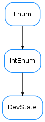

DevState¶

-
class
DevState[source]¶ Bases:
enum.IntEnumThis is the taurus.core.tango equivalent to PyTango.DevState. It defines the same members and uses the same numerical values internally, allowing equality comparisons with
PyTango.DevState(but not identity checks!):from taurus.core.tango import DevState as D1 from PyTango import DevState as D2 D1.OPEN == D2.OPEN # --> True D1.OPEN in (D2.ON, D2.OPEN) # --> True D1.OPEN == 3 # --> True D1.OPEN is 3 # --> False D1.OPEN is D2.OPEN # --> False
-
ALARM= <DevState.ALARM: 11>¶
-
CLOSE= <DevState.CLOSE: 2>¶
-
DISABLE= <DevState.DISABLE: 12>¶
-
EXTRACT= <DevState.EXTRACT: 5>¶
-
FAULT= <DevState.FAULT: 8>¶
-
INIT= <DevState.INIT: 9>¶
-
INSERT= <DevState.INSERT: 4>¶
-
MOVING= <DevState.MOVING: 6>¶
-
OFF= <DevState.OFF: 1>¶
-
ON= <DevState.ON: 0>¶
-
OPEN= <DevState.OPEN: 3>¶
-
RUNNING= <DevState.RUNNING: 10>¶
-
STANDBY= <DevState.STANDBY: 7>¶
-
UNKNOWN= <DevState.UNKNOWN: 13>¶
-